6.7. rejectCosmicRays¶
6.7.1. Purpose¶
This primitive will mask cosmic rays in a GHOST data frame by updating the data mask.
Warning
The algorithm seems to work, but isn’t managing to update the DQ plane. I’m working on the issue. -MCW
6.7.2. Inputs and Outputs¶
The following options can be passed to rejectCosmicRays via the RecipeSystem, or overridden with a user configuration file, as marked:
| Parameter | Type | Default | Override? | Description | |
|---|---|---|---|---|---|
| Recipe | User | ||||
| suffix | str | _cosmicRaysRejected | Y | Y | Suffix affixed to modified file. |
| subsampling | int | 2 | Y | Y | The number of pixels to subsample in each direction of each pixel. |
| sigma_lim | float | 5.0 | Y | Y | Sigma clipping value. |
| f_lim | float | 6.0 | Y | Y | Fine-structure clipping limit. |
| n_passes | int | 2 | Y | Y | Number of iterations to perform. |
6.7.3. Algorithm¶
This primitive is a first-principles implementation of the LACosmic algorithm. NumPy array operations are used for maximum efficiency. For a full-discussion of the algorithm, see van Dokkum 2001, PASP 113, 1420-1427 (ADS). In summary (where the symbol denotes convolution):
- Create a Laplacian, 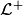, of the input data frame,
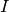.
- Subsample the image by a factor of
subsamplingand apply the Laplacian transformation; - Set any negative sub-pixels to have value 0 instead;
- Re-sample the image back to its original resolution.
- Subsample the image by a factor of
- Generate the ‘sigma map’,
 , of the frame.
, of the frame.- Form a ‘noise image’ of the data,
 , where and
, where and
 are the data gain and read noise respectively.
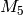 is a 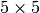 median filter used to smooth the data.
are the data gain and read noise respectively.
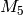 is a 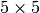 median filter used to smooth the data. - The sigma map is then generated as 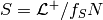, where
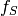 is the
subsamplingfactor used. - Smooth the sigma map to help remove sampling flux, resulting in 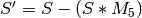.
- Form a ‘noise image’ of the data,
- Generate the ‘fine-structure image’ of the frame,
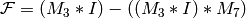, where 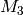
and
 are
are  and 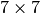 median filters,
and 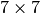 median filters, - Mark pixels as cosmic rays (via the image quality plane) if:

sigma_lim, and
f_lim.
- For the purposes of the algorithm (i.e. not in the data to be returned), replace cosmic rays pixels with the median value of surrounding pixels.
- Iterate over steps 1-5 until
n_passesis reached, or the number of cosmic rays detected falls to 0.
6.7.4. Issues and Limitations¶
Both strong spectral features and, in high-resolution mode, the ThXe calibration output may be incorrectly flagged as cosmic rays. Therefore, this primitive will trigger a call to need to add more here once this actually works
Note
The current preset values of sigma_lim (15.0, 5.0), f_lim
(5.0) and n_passes (5) are a first-pass guess at what seems to
flag roughly the correct number of cosmic rays. More complete
testing, and the possible implementation of a table of preset values
on a case-by-case basis, will need to wait until the findApertures
routine (and related routines) are finalized and mixed in with the
cosmic ray finding.